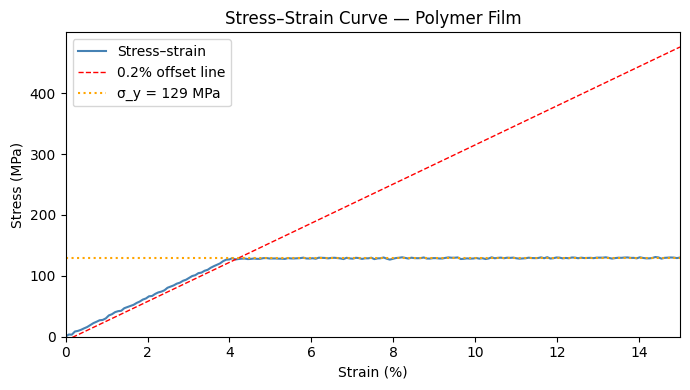

2. NumPy Arrays#
Python’s plain lists are flexible but slow for numerical work, and they don’t naturally support “add these two collections of numbers element-by-element.” NumPy is the foundation of scientific computing in Python precisely because it fixes this: it provides an efficient N-dimensional array object and mathematical operations that operate on entire arrays at once — much faster than Python loops, and with the same terse notation you’d use for a single number (\(y = 2x\) works whether \(x\) is one measurement or ten thousand). Pandas (Notebook 3), Matplotlib (Notebook 4), and virtually every statistics and machine-learning tool in this course is built directly on top of NumPy arrays, so the operations here are worth knowing well.
Topics
Creating arrays
Array properties, indexing and slicing
Mathematical operations and broadcasting
Statistical aggregation
Linear algebra
Materials science example: stress–strain analysis
import numpy as np
print('NumPy version:', np.__version__)
NumPy version: 2.4.1
2.1 Creating Arrays#
# From a Python list
hardness = np.array([182, 195, 188, 201, 179, 193]) # Vickers HV
print('hardness:', hardness)
print('dtype:', hardness.dtype) # int64 inferred
# From a list of lists → 2-D array (rows = samples, cols = properties)
# Columns: [density g/cm³, E_modulus GPa, yield_strength MPa, hardness HV]
steel_data = np.array([
[7.85, 200, 250, 180], # mild steel
[7.80, 210, 550, 320], # 304 stainless
[7.75, 193, 520, 300], # 316 stainless
[7.85, 205, 620, 380], # tool steel
], dtype=float)
print('\nsteel_data shape:', steel_data.shape) # (4, 4)
print('ndim:', steel_data.ndim)
hardness: [182 195 188 201 179 193]
dtype: int64
steel_data shape: (4, 4)
ndim: 2
# Convenience constructors
T_range = np.linspace(25, 1000, 200) # 200 evenly spaced temperatures (°C)
t_steps = np.arange(0, 10.5, 0.5) # 0, 0.5, 1.0, … 10.0 (hours)
zeros_2x3 = np.zeros((2, 3))
eye3 = np.eye(3) # 3×3 identity matrix
random_sample = np.random.default_rng(42).normal(loc=170, scale=5, size=20) # synthetic capacities
print('T_range: first/last:', T_range[0], T_range[-1], ' len:', len(T_range))
print('t_steps:', t_steps)
print('random_sample (mAh/g):', random_sample.round(1))
T_range: first/last: 25.0 1000.0 len: 200
t_steps: [ 0. 0.5 1. 1.5 2. 2.5 3. 3.5 4. 4.5 5. 5.5 6. 6.5
7. 7.5 8. 8.5 9. 9.5 10. ]
random_sample (mAh/g): [171.5 164.8 173.8 174.7 160.2 163.5 170.6 168.4 169.9 165.7 174.4 173.9
170.3 175.6 172.3 165.7 171.8 165.2 174.4 169.8]
2.2 Indexing and Slicing#
# 1-D indexing
print('First hardness:', hardness[0])
print('Last hardness: ', hardness[-1])
print('Slice [2:5]: ', hardness[2:5])
# 2-D indexing: [row, col]
print('\nsteel_data[1, 2] (E-modulus of 304SS):', steel_data[1, 2], 'MPa')
print('Row 2 (316SS):', steel_data[2])
print('Column 1 (E-modulus all steels):', steel_data[:, 1], 'GPa')
# Boolean (fancy) indexing
high_strength = steel_data[steel_data[:, 2] >= 550] # yield strength ≥ 550 MPa
print('\nHigh-strength steels (σ_y ≥ 550 MPa):')
print(high_strength)
First hardness: 182
Last hardness: 193
Slice [2:5]: [188 201 179]
steel_data[1, 2] (E-modulus of 304SS): 550.0 MPa
Row 2 (316SS): [ 7.75 193. 520. 300. ]
Column 1 (E-modulus all steels): [200. 210. 193. 205.] GPa
High-strength steels (σ_y ≥ 550 MPa):
[[ 7.8 210. 550. 320. ]
[ 7.85 205. 620. 380. ]]
2.3 Mathematical Operations and Broadcasting#
Operations on NumPy arrays are element-wise by default: array1 + array2
adds corresponding entries together, not the whole arrays as single blobs —
exactly like adding two columns of a spreadsheet row by row, but written as
one line instead of a loop.
Broadcasting extends this idea to arrays of different (but compatible)
shapes: NumPy automatically “stretches” the smaller array across the larger
one without actually copying any data. The most common use in this course is
subtracting a single row of column-means from an entire table (a (4,)
array from a (4,4) array below) — the same rescaling idea used for coding
variables in Part V, applied here at the level of whole datasets.
# ── Element-wise arithmetic ───────────────────────────────────────────────────
# Simulate charge–discharge cycle data
rng = np.random.default_rng(7)
cycle_numbers = np.arange(1, 101)
capacity_0 = 170.0 # initial capacity mAh/g
fade_rate = 0.0015 # capacity loss per cycle (fraction)
# Capacity with exponential fade + noise
capacity = capacity_0 * np.exp(-fade_rate * cycle_numbers) + rng.normal(0, 0.5, 100)
# Compute retention (relative to cycle 1)
retention = capacity / capacity[0] * 100 # %
print(f'Cycle 1: {capacity[0]:.2f} mAh/g ({retention[0]:.1f}%)')
print(f'Cycle 50: {capacity[49]:.2f} mAh/g ({retention[49]:.1f}%)')
print(f'Cycle 100: {capacity[99]:.2f} mAh/g ({retention[99]:.1f}%)')
Cycle 1: 169.75 mAh/g (100.0%)
Cycle 50: 158.72 mAh/g (93.5%)
Cycle 100: 145.30 mAh/g (85.6%)
# ── Broadcasting ─────────────────────────────────────────────────────────────
# Normalise steel_data: subtract column mean, divide by column std
col_mean = steel_data.mean(axis=0) # shape (4,)
col_std = steel_data.std(axis=0) # shape (4,)
# Broadcasting: (4,4) - (4,) → NumPy aligns on the last axis
steel_norm = (steel_data - col_mean) / col_std
print('Column means (original):', col_mean.round(2))
print('Column std (original):', col_std.round(2))
print('\nNormalised data (mean≈0, std≈1 per column):')
print(steel_norm.round(3))
print('Column means after normalisation:', steel_norm.mean(axis=0).round(10))
Column means (original): [ 7.81 202. 485. 295. ]
Column std (original): [4.0000e-02 6.2800e+00 1.4045e+02 7.2630e+01]
Normalised data (mean≈0, std≈1 per column):
[[ 0.905 -0.318 -1.673 -1.583]
[-0.302 1.273 0.463 0.344]
[-1.508 -1.432 0.249 0.069]
[ 0.905 0.477 0.961 1.17 ]]
Column means after normalisation: [-0. -0. 0. 0.]
2.4 Statistical Aggregation#
# ── Summary statistics on the capacity array ──────────────────────────────────
print('Mean: ', capacity.mean().round(2), 'mAh/g')
print('Std: ', capacity.std().round(2), 'mAh/g')
print('Min: ', capacity.min().round(2), 'mAh/g')
print('Max: ', capacity.max().round(2), 'mAh/g')
print('Median: ', np.median(capacity).round(2), 'mAh/g')
print('Q25/Q75: ', np.percentile(capacity, [25, 75]).round(2))
# ── Column-wise stats on steel_data ───────────────────────────────────────────
property_names = ['density', 'E_mod', 'yield_str', 'hardness']
print('\nPer-column statistics for steel dataset:')
print(f'{"Property":<14} {"Mean":>10} {"Std":>10} {"Min":>10} {"Max":>10}')
for name, mn, sd, mn_v, mx_v in zip(
property_names,
steel_data.mean(axis=0),
steel_data.std(axis=0),
steel_data.min(axis=0),
steel_data.max(axis=0)):
print(f'{name:<14} {mn:>10.2f} {sd:>10.2f} {mn_v:>10.2f} {mx_v:>10.2f}')
Mean: 157.66 mAh/g
Std: 6.79 mAh/g
Min: 145.3 mAh/g
Max: 169.75 mAh/g
Median: 157.75 mAh/g
Q25/Q75: [151.92 163.45]
Per-column statistics for steel dataset:
Property Mean Std Min Max
density 7.81 0.04 7.75 7.85
E_mod 202.00 6.28 193.00 210.00
yield_str 485.00 140.45 250.00 620.00
hardness 295.00 72.63 180.00 380.00
2.5 Linear Algebra#
You do not need to know how to invert a matrix by hand to use np.linalg —
you need to know what question each function answers. np.linalg.inv
answers “if this matrix describes how stress relates to strain, what matrix
describes the reverse relationship?” np.linalg.eigh answers “along which
special directions does this matrix act like simple multiplication by a
single number, and what is that number?” (used below to find a crystal’s
principal stiffness directions). These same two operations — inversion and
eigen-decomposition — reappear throughout Parts IV and V (regression,
PCA, and response-surface optimisation all lean on them), so seeing them
applied to a familiar materials problem here is good preparation.
# ── Voigt notation stiffness tensor for cubic crystal (simplified) ────────────
# Example: Copper (GPa) — 3×3 block for in-plane deformation
C = np.array([
[168.4, 121.4, 0],
[121.4, 168.4, 0],
[ 0, 0, 75.4],
])
# Inverse = compliance matrix S
S = np.linalg.inv(C)
print('Compliance matrix (TPa⁻¹):')
print((S * 1000).round(4))
# Young's modulus from compliance diagonal: E = 1/S11 (GPa)
E_x = 1 / S[0, 0]
E_y = 1 / S[1, 1]
print(f'\nYoung\'s modulus E_x = {E_x:.1f} GPa')
print(f"Young's modulus E_y = {E_y:.1f} GPa")
# Eigenvalue decomposition: principal stiffnesses
eigenvalues, eigenvectors = np.linalg.eigh(C)
print(f'\nPrincipal stiffnesses (eigenvalues): {eigenvalues.round(1)} GPa')
Compliance matrix (TPa⁻¹):
[[12.3636 -8.913 0. ]
[-8.913 12.3636 0. ]
[ 0. 0. 13.2626]]
Young's modulus E_x = 80.9 GPa
Young's modulus E_y = 80.9 GPa
Principal stiffnesses (eigenvalues): [ 47. 75.4 289.8] GPa
2.6 Case Study: Stress–Strain Curve Analysis#
import matplotlib.pyplot as plt
rng = np.random.default_rng(21)
# Synthetic stress–strain data for a polymer film
strain = np.linspace(0, 0.15, 200) # dimensionless (0–15 %)
E_mod = 3.2e3 # MPa (Young's modulus)
# Elastic region: linear
sigma_elastic = E_mod * strain
# Yield at ~0.04 strain — approximate with a smooth transition
sigma_yield = 128 # MPa
sigma = np.where(
strain < 0.04,
E_mod * strain,
sigma_yield + 5 * np.sqrt((strain - 0.04).clip(0)),
)
sigma += rng.normal(0, 0.8, len(strain)) # measurement noise
# --- Analysis with NumPy ---
# 1. Young's modulus from elastic region (strain 0–0.02)
mask_elastic = strain <= 0.02
E_fit = np.polyfit(strain[mask_elastic], sigma[mask_elastic], deg=1)[0]
# 2. Yield strength (0.2% offset)
offset_line = E_fit * (strain - 0.002) # 0.2% offset line
# Find where offset line intersects the stress–strain curve
diff = sigma - offset_line
sign_changes = np.where(np.diff(np.sign(diff)))[0]
if len(sign_changes):
yield_strain = strain[sign_changes[0]]
yield_stress = sigma[sign_changes[0]]
else:
yield_stress = sigma_yield
print(f'Fitted Young\'s modulus: {E_fit:.0f} MPa')
print(f'0.2% offset yield strength: {yield_stress:.1f} MPa')
print(f'Ultimate tensile stress: {sigma.max():.1f} MPa')
# --- Plot ---
fig, ax = plt.subplots(figsize=(7, 4))
ax.plot(strain * 100, sigma, 'steelblue', lw=1.5, label='Stress–strain')
ax.plot(strain * 100, offset_line, 'r--', lw=1, label='0.2% offset line')
ax.axhline(yield_stress, color='orange', ls=':', lw=1.5, label=f'σ_y = {yield_stress:.0f} MPa')
ax.set_xlabel('Strain (%)')
ax.set_ylabel('Stress (MPa)')
ax.set_title('Stress–Strain Curve — Polymer Film')
ax.legend()
ax.set_xlim(0, 15)
ax.set_ylim(0)
plt.tight_layout()
plt.show()
Fitted Young's modulus: 3214 MPa
0.2% offset yield strength: 129.1 MPa
Ultimate tensile stress: 130.9 MPa

Exercises#
Crystal density: The unit cell of NaCl is cubic with \(a = 5.64\) Å and \(Z = 4\) formula units per cell. Molar masses: Na = 22.99, Cl = 35.45 g/mol. Compute the theoretical density using NumPy (Avogadro \(N_A = 6.022\times10^{23}\) mol\(^{-1}\)).
Rolling mean: For the
capacitycycling array, compute a 10-cycle rolling mean usingnp.convolvewithmode='valid'.Correlation matrix: Compute the Pearson correlation matrix of
steel_datausingnp.corrcoef. Which two properties are most correlated?